1084C10 engine oil heat exchanger - r + r
- Path
- Procedures > 10 ENGINE > 1084 ENGINE LUBRICATION SYSTEM > 1084C engine oil cooling circuit > 1084C10 engine oil heat exchanger - r + r
- Kind
- repair procedure (removal / refitting; the operation number is the code)
- Applies to
- all engines; all production periods
- Interactive page
- https://sloeber94.github.io/elrnDB-a156/en/#/3237617
Applies to: engines: 2.5 V6; all production periods
 Removing
Removing
 Refitting
RefittingPosition the vehicle on the ramp.
Ensure that the ignition key is in the OFF position, then disconnect the negative battery terminal.
 | Name | Connector |
|---|---|---|
- | Battery |
Proceed with removal 4450B12 front or rear wheels (two) - r+r .
Proceed with the removal 7055B64 Engine compartment DUST shield in front wheel arch (one), left or right - R.R. (Right and left sides).
Proceed with removal 7055B54 under-engine guard - r r .
Proceed with removal 1076B52 exhaust pipe (one) leaving l/h or r/h exhaust manifold - r + r .
1. Press the rapid attachment springs, by hand, and disconnect the lower coolant outlet hose from the radiator.
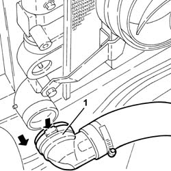
Applies to: engines: 2.5 V6; all production periods
1. Remove the electrical connections top guard after disengaging it from the fuel vapour recirculation pipe.
2. Undo the bolts (2a) and remove the electrical connections lower protection (2b).
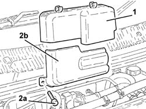
Applies to: engines: 2.5 V6; all production periods
1. Undo the bolts (1a) and move aside the oil vapour separator (1b).
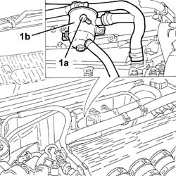
Applies to: engines: 2.5 V6; all production periods
1. Undo the nuts fixing the right cylinder head exhaust manifold.
2. Undo the bolts securing the rigid coolant supply pipe to the engine oil heat exchanger.
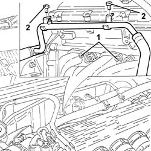
Applies to: engines: 2.5 V6; all production periods
1. Undo the nuts (1a) and the bolt (1b) and move the engine wiring (1c) away.
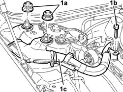
Applies to: engines: 2.5 V6; all production periods
1. Fit a suitable bracket on the right cylinder head which can safely support the power unit.
2. Fit the safety tools (2a) and (2b) for supporting the power unit and connect the rod to the bracket fitted previously.
 | Name | Country |
|---|---|---|
2a | Crossmember | 1.820.581.000 |
| Name | Country |
|---|---|---|
2b | Brackets | 1.870.651.000 |
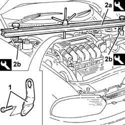
Applies to: engines: 2.5 V6; all production periods
1. Undo the bolts (1a) and disconnect the right and left half shafts (1b).
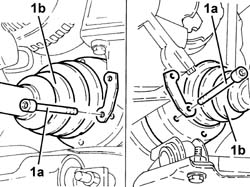
Applies to: engines: 2.5 V6; all production periods
Position a hydraulic jack under the gearbox.
1. Undo the bolts (1a) and (1b), then remove the power unit rigid rear support (1c) complete with rubber block (1d).
2. Recover the exhaust pipe mounting bracket.
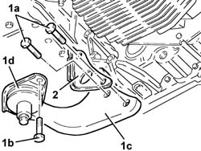
Applies to: engines: 2.5 V6; all production periods
1. Undo the nuts (1a) and remove the heat shield from the power steering box (1b).
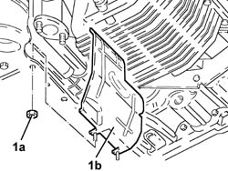
Applies to: engines: 2.5 V6; all production periods
1. Remove the clips securing the brake calipers to the mounting brackets.
2. Disconnect the electrical connection for the right brake pad wear sensor.
| Name | Connector |
|---|---|---|
2 | Right brake pad wear sensor (switch) |
3. Undo the bolts securing the front brake calipers to their mounting brackets.
4. Release the flexible pipes to the front brake calipers from the mounting brackets.
5. Remove the front brake calipers and secure them to the front suspension springs so that they do not hinder future operations.
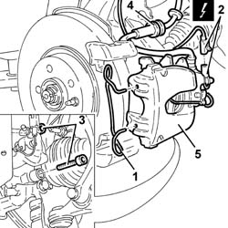
Applies to: engines: 2.5 V6; all production periods
1. Undo the bolts (1a) and remove the front wheel rpm sensors (1b) from the housings in the steering knuckles.
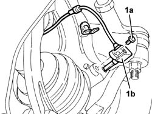
Applies to: engines: 2.5 V6; all production periods
1. Undo the nuts (1a) securing the front anti-roll bar joints (1b) to the forks securing the shock absorbers to the lower track control arms.
2. Undo the bolts securing the shock absorber forks to the lower track control arms, shock absorber side.
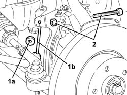
Applies to: engines: 2.5 V6; all production periods
1. Undo the nuts (1a) and disconnect the track rods (1b) from the steering knuckles using the tool (1c).
| Name | Country |
|---|---|---|
1c | Extractor | 1.821.169.000 |
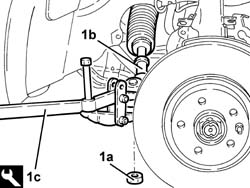
Applies to: engines: 2.5 V6; all production periods
1. Undo nuts (1a) and disconnect upper track control arms (1b) from the steering knuckles using tool (1c).
| Name | Country |
|---|---|---|
1c | Extractor | 1.821.169.000 |
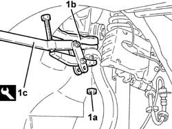
Applies to: engines: 2.5 V6; all production periods
1. Undo the front nuts securing the mounting for the gear control levers and handbrake.
2. Recover the plates.
3. Undo the rear bolts (3a) and undo the remaining bolts (3b) securing the gear control levers and handbrake mounting.
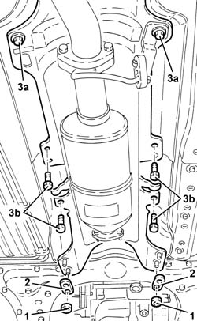
Applies to: engines: 2.5 V6; all production periods
1. Support the front suspension crossmember using a hydraulic jack fitted with a suitable flange.
2. Undo the bolts securing the power steering box to the front suspension crossmember.
3. Undo the rear bolts (3a) and side bolts (3b) securing the front suspension crossmember to the bodyshell.
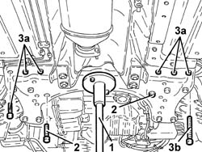
Applies to: engines: 2.5 V6; all production periods
1. Lower the hydraulic jack and remove the complete front suspension crossmember.
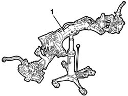
Applies to: engines: 2.5 V6; all production periods
1. Undo the drain plug and drain the manual gearbox and differential fluid, as necessary, to prevent it from escaping during the removal of the intermediate driveshaft, then tighten the drain plug.
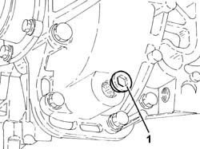
Applies to: engines: 2.5 V6; all production periods
1. Undo the bolts (1a) and remove the intermediate drive shaft (1b).
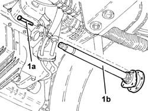
Applies to: engines: 2.5 V6; all production periods
1. Remove the cartridge engine oil filter (1a) using a suitable tool (1b).
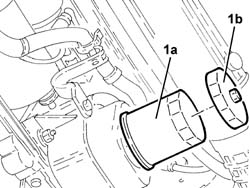
Applies to: engines: 2.5 V6; all production periods
1. Remove the right cylinder head exhaust manifold whose fastenings were already loosened previously.
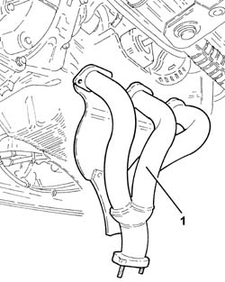
Applies to: engines: 2.5 V6; all production periods
1. Release the electrical wiring for the alternator (1a) from the fastening band (1b).
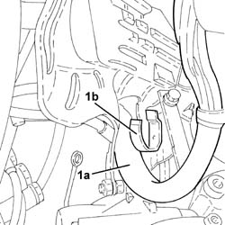
Applies to: engines: 2.5 V6; all production periods
1. Undo the bolt (1a) and remove the electrical wiring mounting bracket (1b).
2. Loosen the band securing the coolant return hose to the engine oil heat exchanger, exchanger side.
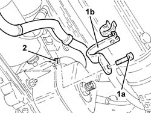
Applies to: engines: 2.5 V6; all production periods
1. Undo the nut fixing the engine oil heat exchanger.
Remove the engine oil heat exchanger from its housing, releasing it from the hose.
2. Disconnect the coolant supply pipe (2a) to the engine oil heat exchanger (2b), then remove the latter, complete with O-ring.
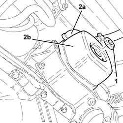
Applies to: engines: 2.5 V6; all production periods
Refitting
RemovingConnect the coolant supply pipe to the engine oil heat exchanger.
Place the engine oil heat exchanger, complete with O-ring, back in its housing and connect it to the hose.
Tighten the nut fixing the engine oil heat exchanger.
Tighten the band securing the coolant return hose to the engine oil heat exchanger, exchanger side.
Place the electrical wiring mounting bracket back in its housing and secure it using the bolt.
Fasten the electrical wiring for the alternator to the retaining band.
Place the right cylinder head exhaust manifold in its housing.
Place the cartridge engine oil filter in its housing, tightening it fully by hand.
1. Refit the intermediate half shaft (1a) in its seating and tighten its bolts (1b) to the specified torque.
 | Fastening | Component | Ø | Value (daNm) |
|---|---|---|---|---|
1b | Bolt | INTERMEDIATE DRIVE SHAFT | M8 | (Support side) 2.5 ÷ 2.8 |
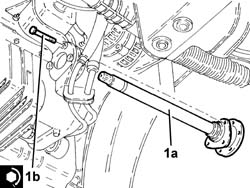
Applies to: engines: 2.5 V6; all production periods
Place the complete front suspension crossmember back in its housing using the hydraulic jack.
1. Tighten the rear bolts (1a) and the side bolts (1b) fixing the front suspension crossmember to the bodyshell.
| Fastening | Component | Ø | Value (daNm) |
|---|---|---|---|---|
1a | Bolt | ENGINE OR ROD ANCHORAGE BEAM | M10 | (Bodyshell side) 8.1 ÷ 9.9 |
| Fastening | Component | Ø | Value (daNm) |
|---|---|---|---|---|
1a | Rear bolts | ENGINE OR ROD ANCHORAGE BEAM | M12 | (Bodyshell side) 10.8 ÷ 13.2 |
| Fastening | Component | Ø | Value (daNm) |
|---|---|---|---|---|
1b | Side bolt | ENGINE OR ROD ANCHORAGE BEAM | M12 | (Bodyshell side) 10.8 ÷ 13.2 |
2. Tighten the bolts securing the power steering box to the front suspension crossmember to the specified torque.
| Fastening | Component | Ø | Value (daNm) |
|---|---|---|---|---|
2 | Bolt | POWER STEERING BOX | M14 | (Front suspension crossmember side) 11.0 - 13.6 |
3. Remove the hydraulic jack, complete with flange for supporting the front suspension crossmember.
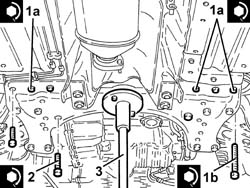
Applies to: engines: 2.5 V6; all production periods
Tighten the nuts and bolts fixing the handbrake and gear lever mounting.
1. Connect the upper track control arms (1a) to the steering knuckles and tighten the nuts (1b) to the specified torque.
| Fastening | Component | Ø | Value (daNm) |
|---|---|---|---|---|
1b | Nut | FRONT DAMPER BOTTOM ATTACHMENT | M12 x 1.25 | (on pillar) 12 |
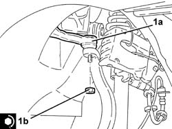
Applies to: engines: 2.5 V6; all production periods
1. Connect the tie-rods (1a) to the steering knuckles and tighten the nuts (1b) to the specified torque.
| Fastening | Component | Ø | Value (daNm) |
|---|---|---|---|---|
1b | Nut | POWER STEERNG BOX LINKS | M14 | (Wheel damper side) 2.9 ÷ 3.6 |
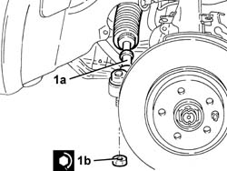
Applies to: engines: 2.5 V6; all production periods
1. Tighten the bolts securing the forks connecting the shock absorbers to the lower track control arms, shock absorber side, to the recommended torque.
| Fastening | Component | Ø | Value (daNm) |
|---|---|---|---|---|
1 | Bolt | FRONT DAMPER FORK ON WISHBONE | M12 | (Shock absorber side) 8.1 - 8.9 |
2. Tighten the nuts (2a) securing the front anti-roll bar joints (2b) to the forks connecting the shock absorbers to the lower track control arms to the recommended torque.
| Fastening | Component | Ø | Value (daNm) |
|---|---|---|---|---|
2a | Nut | FRONT ANTI-ROLL BAR JOINTS | M10 | 3.8 ÷ 4.7 |
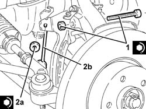
Applies to: engines: 2.5 V6; all production periods
Place the front wheel rpm sensors back in their housings and fasten them using the bolts.
1. Place the front brake calipers (1a) back in their housings and fasten them to the mounting brackets by tightening the bolts (1b) to the recommended torque.
| Fastening | Component | Ø | Value (daNm) |
|---|---|---|---|---|
1b | Bolt | FRONT BRAKE CALIPER ASSEMBLY | M10 | (Bracket side) 4.8 - 5.2 |
2. Fix the flexible pipes to the front brake calipers to their mounting brackets.
3. Connect the electrical connection for the right brake pad wear sensor.
4. Refit in their seats the clips securing the brake calipers to their mounting brackets.
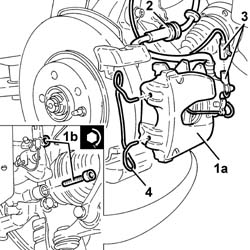
Applies to: engines: 2.5 V6; all production periods
Refit the power steering box heat shield in its seat and tighten its nuts.
1. Place the power unit rigid rear support (1a), complete with flexible mounting (1b) and exhaust pipe mounting bracket (1c) back in its housing and fasten it by tightening the bolts (1d) and (1e) to the recommended torque.
| Fastening | Component | Ø | Value (daNm) |
|---|---|---|---|---|
1d | Bolt | POWER UNIT RIGID REAR MOUNT | M16 | (Gearbox side) 10.2 ÷ 12.6 |
| Fastening | Component | Ø | Value (daNm) |
|---|---|---|---|---|
1e | Bolt | INTERM RUBBER MOUNT | M8 | (Front suspension crossmember side) 3.1 ÷ 3.8 |
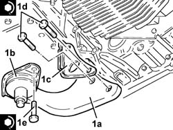
Applies to: engines: 2.5 V6; all production periods
Remove the hydraulic jack positioned under the gearbox.
1. Connect the right and left half shafts (1a) and tighten the new bolts (1b) to the specified torque.
| Fastening | Component | Ø | Value (daNm) |
|---|---|---|---|---|
1b | Bolt | FRONT DRIVE SHAFT COMPLETE WITH JOINTS | M10 | 5.0 ÷ 6.1 |
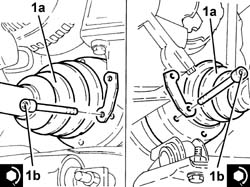
Applies to: engines: 2.5 V6; all production periods
Remove the safety tools used for supporting the power unit.
| Name | Country |
|---|---|---|
- | Crossmember | 1.820.581.000 |
| Name | Country |
|---|---|---|
- | Brackets | 1.870.651.000 |
Place the engine electrical wiring back in its housing and secure it using the nuts and the bolt.
Tighten the bolts securing the rigid coolant supply pipe to the engine oil heat exchanger.
Tighten the nuts fixing the right cylinder head exhaust manifold to the recommended torque.
| Fastening | Component | Ø | Value (daNm) |
|---|---|---|---|---|
- | Nut | EXHAUST MANIFOLD/S | M8 | (Cylinder head side) 1.9 - 2.3 |
Place the oil vapour separator back in its housing and fix it using the bolts.
Place the electrical connections lower protection back in its housing and secure it using the bolts.
Place the electrical connections upper protection back in its housing, then secure the fuel vapour recirculation pipe to it.
Connect the lower coolant outlet hose from the radiator.
Proceed with removal 1076B52 exhaust pipe (one) leaving l/h or r/h exhaust manifold - r + r .
Proceed with removal 7055B54 under-engine guard - r r .
Proceed with the removal 7055B64 Engine compartment DUST shield in front wheel arch (one), left or right - R.R. (Right and left sides).
Proceed with removal 4450B12 front or rear wheels (two) - r+r .
Connect the negative (-) battery terminal.
Refill the engine oil lubrication system 1084A10 ENGINE OIL - Check level and top up, if necessary .
Refill the manual gearbox and differential 2110A04 Manual gearbox and differential OIL - Check level and top up, if necessary .
Supply the engine cooling system with the recommended fluid.
 | Type | Component | Name | Qty. |
|---|---|---|---|---|
- | Fluid [l] | ENGINE COOLING CIRCUIT | Mixture 50% Paraflu11 for Alfa Romeo/distilled water | 9.2 |
Remove the car from the ramps.
Applies to: all engines; all production periods
Removing
RefittingPosition the vehicle on the ramp.
Proceed with removal 7055B54 under-engine guard - r r .
1. Disconnect the lower radiator hose from the water pump rigid inlet pipe.
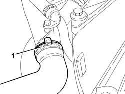
Applies to: all engines; all production periods
1. Release and remove the engine oil filter using a suitable tool.
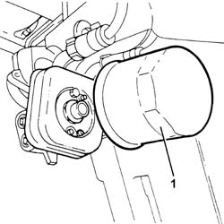
Applies to: all engines; all production periods
1. Undo the bolts fixing the coolant supply pipe to the engine oil heat exchanger.
2. Loosen the connector of the coolant outlet pipe from the engine oil heat exchanger on the water pump rigid inlet pipe side.
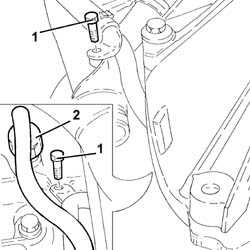
Applies to: all engines; all production periods
1. Undo the connector securing the engine oil heat exchanger.
2. Loosen the bands (2a) and disconnect the engine coolant inlet and outlet pipes (2b) from the engine oil heat exchanger.
3. Remove the engine oil heat exchanger.
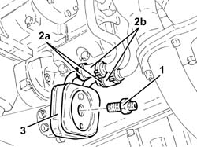
Applies to: all engines; all production periods
Refitting
RemovingConnect the water inlet and outlet pipes to the heat exchanger and secure them using the bands.
Place the engine oil heat exchanger back in its housing and secure it using the pin.
Tighten the connector of the coolant outlet pipe from the engine oil heat exchanger on the water pump rigid inlet pipe side.
Tighten the bolts fixing the coolant supply pipe to the engine oil heat exchanger.
Refit the engine oil filter in its seating and tighten it fully by hand.
Connect the lower radiator hose to the water pump rigid inlet pipe.
Supply the engine cooling system with the recommended fluid.
| Type | Component | Name | Qty. |
|---|---|---|---|---|
- | Fluid | ENGINE COOLING CIRCUIT | Mixture 50% Paraflu11 for Alfa Romeo/distilled water | 6.9 |
Top up the engine oil lubrication circuit using the recommended oil.
| Type | Component | Name | Qty. |
|---|---|---|---|---|
- | Oli [l] | ENGINE LUBRICATION CIRCUIT | SELENIA 20K | 4.4 |
For a distinctly sporty performance, use the recommended oil for the lubrication circuit.
| Type | Component | Name | Qty. |
|---|---|---|---|---|
- | Oli [l] | ENGINE LUBRICATION CIRCUIT | SELENIA RACING | 4.4 |
For the optimum operation of the engine in particularly harsh climatic conditions (temperatures below -20 degrees C), use the recommended oil for the engine lubrication circuit.
| Type | Component | Name | Qty. |
|---|---|---|---|---|
- | Oli [l] | ENGINE LUBRICATION CIRCUIT | SELENIA PERFORMER | 4.4 |
Proceed with refitting 7055B54 under-engine guard - r r .
Remove the car from the ramps.
Applies to: engines: 2.0 JTS, 2.0 JTS; all production periods
Removing
RefittingPosition the vehicle on the ramp.
Ensure that the ignition key is in the OFF position, then disconnect the negative battery terminal.
| Name | Connector |
|---|---|---|
- | Battery |
Proceed with removal 1016A40 ignition coil cover on cylinder head- r+r .
Proceed with removal 1076A48 catalytic converter heat shield - r r .
Proceed with removal 7055B54 under-engine guard - r r .
Proceed with removal 1084C12 Engine oil HEAT EXCHANGER, complete with engine oil filler and filter - R.R. .
Applies to: engines: 2.0 JTS, 2.0 JTS; all production periods
Refitting
RemovingProceed with refitting 1084C12 Engine oil HEAT EXCHANGER, complete with engine oil filler and filter - R.R. .
Proceed with refitting 7055B54 under-engine guard - r r .
Proceed with refitting 1076A48 catalytic converter heat shield - r r .
Proceed with refitting 1016A40 ignition coil cover on cylinder head- r+r .
Connect the negative (-) battery terminal.
Top up the engine oil lubrication system 1084A10 ENGINE OIL - Check level and top up, if necessary .
Refill the engine cooling system with coolant 0010T20 coolant change .
Remove the car from the ramps.
Applies to: engines: 1.9 JTD 8v ; all production periods
Removing
Refitting1084B30 engine oil filter r r .
1. Disconnect the coolant inlet and outlet pipes from the engine oil heat exchanger.
2. Undo the pin (2a) and remove the engine oil heat exchanger (2b).
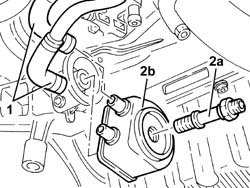
Applies to: engines: 1.9 JTD 8v ; all production periods
Refitting
RemovingConnect the coolant inlet and outlet pipes to the engine oil heat exchanger and replace.
Tighten the connector securing the heat exchanger to the specified torque.
| Fastening | Component | Ø | Value (daNm) |
|---|---|---|---|---|
- | Connector | ENGINE OIL HEAT EXCHANGER | - | 6.0 |
Top up the engine cooling system with the recommended fluid.
| Type | Component | Name | Qty. |
|---|---|---|---|---|
- | Fluid | ENGINE COOLING CIRCUIT | Mixture 50% Paraflu11 for Alfa Romeo/distilled water | 6.1 |
Applies to: engines: 2.4 JTD 10v; all production periods
Removing
Refitting1088D10 lower sleeve for coolant outlet from radiator - r + r .
4450B10 Front WHEEL (one) - R.R. .
7055B64 Engine compartment DUST shield in front wheel arch (one), left or right - R.R. .
1092G10 single engine belt r r .
5040A26 compressor mount - r r .
Remove the cartridge engine oil filter using a suitable tool.
1. Unscrew the fitting.
2. Disconnect the rubber coolant inlet and outlet pipes from the rigid pipes.
3. Remove the engine oil heat exchanger complete with rubber hoses.
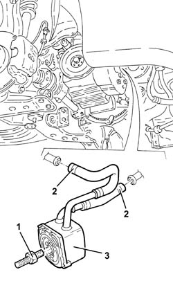
Applies to: engines: 2.4 JTD 10v; all production periods
Refitting
RemovingPlace the engine oil heat exchanger with sleeves back in its housing and secure by tightening the connector to the specified torque.
| Fastening | Component | Ø | Value (daNm) |
|---|---|---|---|---|
- | Connector | ENGINE OIL HEAT EXCHANGER | - | 3.0 |
Refit the engine oil filter in its seating and tighten it fully by hand after lubricating the gasket with engine oil.
Top up the engine cooling system with the recommended fluid.
| Type | Component | Name | Qty. |
|---|---|---|---|---|
- | Fluid [l] | ENGINE COOLING CIRCUIT | Mixture 50% Paraflu11 for Alfa Romeo/distilled water | 6.8 |
5040A26 compressor mount - r r .
1092G10 single engine belt r r .
7055B64 Engine compartment DUST shield in front wheel arch (one), left or right - R.R. .
4450B10 Front WHEEL (one) - R.R. .
1088D10 lower sleeve for coolant outlet from radiator - r + r .
Topics linked from this page (17)
- 0010T20 coolant change
- 1016A40 ignition coil cover on cylinder head- r+r
- 1076A48 catalytic converter heat shield - r r
- 1076B52 exhaust pipe (one) leaving l/h or r/h exhaust manifold - r + r
- 1084A10 ENGINE OIL - Check level and top up, if necessary
- 1084B30 engine oil filter r r
- 1084C12 Engine oil HEAT EXCHANGER, complete with engine oil filler and filter - R.R.
- 1088D10 lower sleeve for coolant outlet from radiator - r + r
- 1092G10 single engine belt r r
- 2110A04 Manual gearbox and differential OIL - Check level and top up, if necessary
- 4450B10 Front WHEEL (one) - R.R.
- 4450B12 front or rear wheels (two) - r+r
- 5040A26 compressor mount - r r
- 7055B54 under-engine guard - r r
- 7055B64 Engine compartment DUST shield in front wheel arch (one), left or right - R.R.
- A1B Battery ( BATTERY NEGATIVE )
- K21 Right brake pad wear sensor (switch)